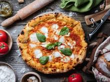
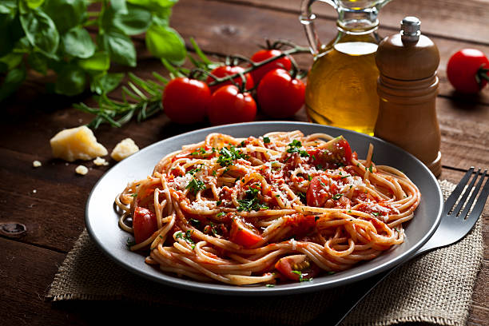
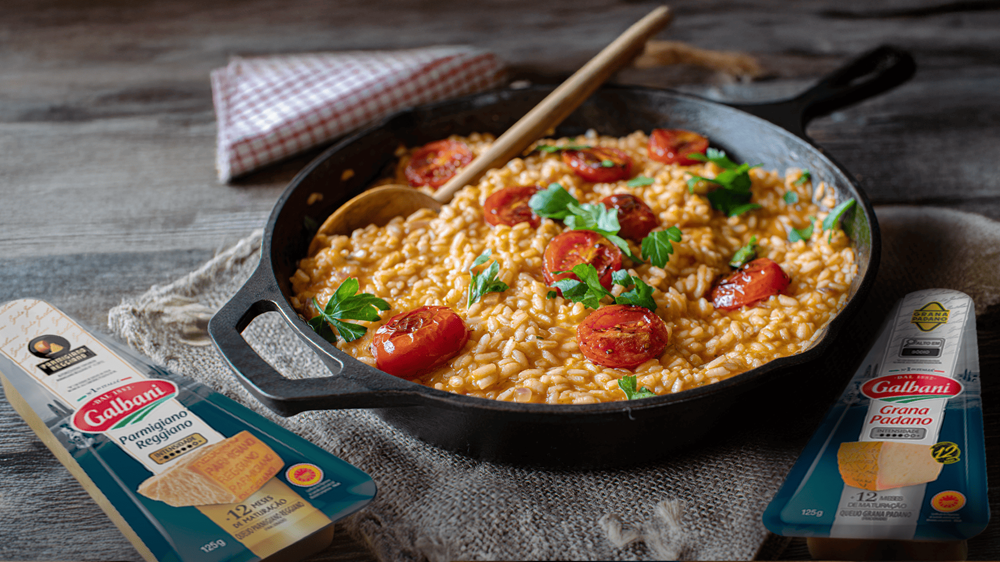

Sobre a culinária Italiana
A culinária italiana é o conjunto de tradições e pratos típicos da Itália, sendo uma das maisconhecidas e apreciadas do mundo. Ela se caracteriza pelo uso de ingredientes frescos e pela valorização de receitas transmitidas ao longo das gerações.
Os pratos italianos costumam ser preparados com ingredientes como massas, tomates, queijos, azeite de oliva e ervas aromáticas. A combinação desses elementos resulta em refeições saborosas e variadas, que fazem parte da cultura e da identidade do país.
Entre os alimentos mais famosos da culinária italiana estão a pizza, o macarrão e o risoto. Esses pratos se destacam pela simplicidade dos ingredientes e pelos diferentes modos de preparo encontrados nas diversas regiões da Itália.
Pratos populares

Pizza
A pizza é composta por uma massa assada coberta com molho de tomate, queijo e diversos ingredientes, como presunto, calabresa, tomate e azeitonas.

Macarrão
O macarrão é composto por uma massa feita de farinha e água, podendo ser acompanhado por molhos, queijos, carnes, legumes e outros ingredientes.

Risoto
O risoto é composto principalmente por arroz, caldo e temperos. Também pode incluir ingredientes como queijo, legumes, cogumelos, carnes ou frutos do mar.